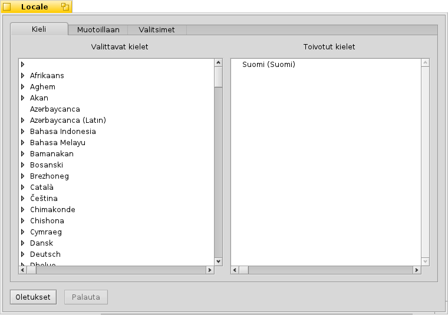
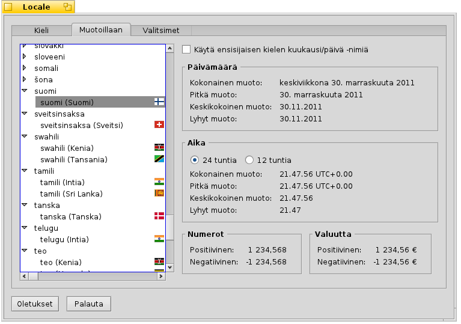

Suomi
Suomi Français
Français Deutsch
Deutsch Italiano
Italiano Русский
Русский Español
Español Svenska
Svenska 日本語
日本語 Українська
Українська 中文 ［中文］
中文 ［中文］ Português
Português Slovenčina
Slovenčina English
English Locale
Locale
| Deskbar: | ||
| Location: | /boot/system/preferences/Locale | |
| Settings: | ~/config/settings/Locale settings |
Haiku's localization system does not only include replacing texts with their translations, but also more complex tasks such as formatting numbers, dates, and times in a way that matches your Locale preferences.
 Language
Language
Haiku has been translated to dozens of languages, unfortunately some translations are not complete yet. For that reason, you can choose more than one language as “Preferred languages”. If some text is missing in a translation, it's replaced with the words of the next preferred language. English is the default fallback (also when not listed).
In this example, the preferred language is set to Spanish. The first fallback is Italian, and if the text is missing there too, it's back to default English.
As you can see, expanding a language entry on the left side reveals sub-entries for specific variations or dialects of a language (if available).
Formatting
On the tab you can set up the formatting of date, time, number and currency formats independently from the settings of your preferred language.
You may be a Spanish fellow located in the Italian speaking part of Switzerland. So, you'd prefer your system in Spanish, but numbers and currency formatted like at work: Swiss/Italian.
If you're more comfortable with your Spanish names for days and months (think of the modified dates of files, for example), you can override this time-specific formatting with the checkbox at the top to .
Granted, the above example is maybe not the most common scenario, but it demonstrates the flexibility of the system.
Options
The last tab provides an option that will . Disable the checkbox if you prefer the graphical interface localized, while retaining the original English names for preference panels, applications and standard folder names.
Changes are applied immediately, though currently running applications may require to be closed and restarted before showing the new setting.
| resets everything to default values. | ||
| brings back the settings that were active when you started the Locale preferences. |